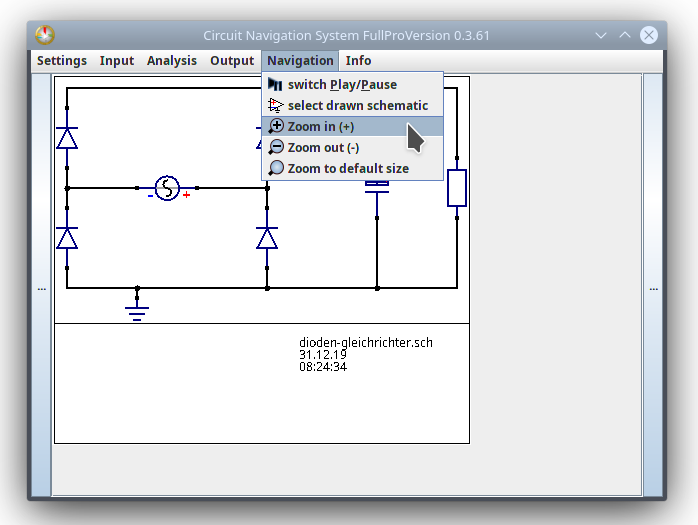
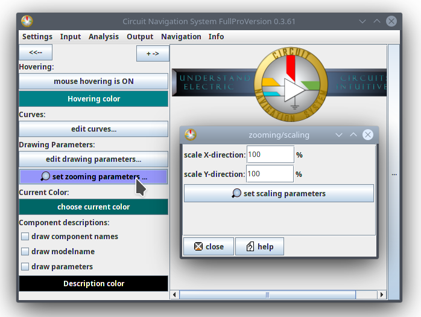

How to zoom in or out on a circuit
There are three options that you can use to display a circuit larger or smaller:
1. Zooming by pressing ctrl and "+" or "-" key
2. Zooming via navigation bar
3. By using a dialog for individual zooming parameters
Option 1: Use keys to zoom in and out
Press the control key and + to zoom in.
Press the control key and - to zoom out.
Keys only work when the program is active. (When you are working on a different program, for example write a text document, and press the keys, then it will not zoom in of course. If you are trying to zoom in or out via keys and it does not work, make sure that this program is activated.)
Option 2: Use the navigation bar
Open the Navigation tab of the main window. Click on one of the options, as shown in the following image:

Option 3: The dialog
You can open a dialog, where you can enter individual factors to resize the display of the circuit, as shown in the image below.
There you can enter a value for the x-direction(width) and for the y-direction(height).
You need to enter a whole number, zero is not allowed.
When you enter a high value, then the circuit is shown large.
When you enter a low value, then the circuit is shown small.
You need to click on the button below the parameters to rescale the circuit.
